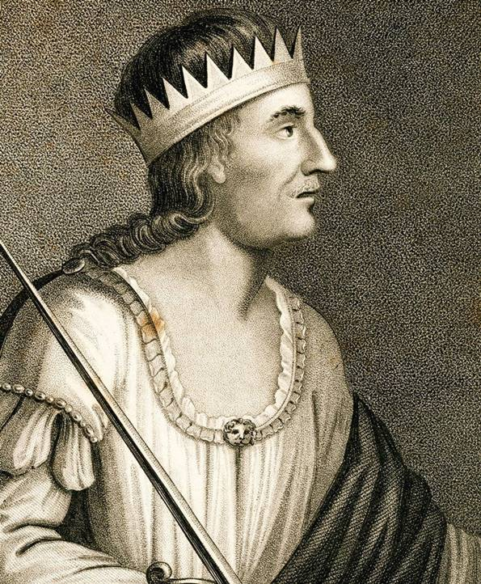
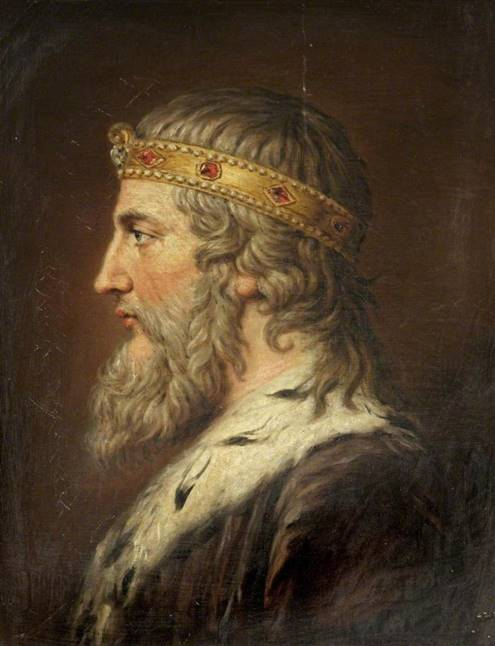

Экберт Великий - покорил большую часть страны, названной Англией.
Ивар и Хальвдан - вторглись в Британию и с 865 по 876 г. захватили Восточную Англию и юго-восточную Нортумбрию, но быстро потеряли часть территорий и заключили мир в 888 году.

Альфред Великий - объединил под своей властью ряд соседних англосаксонских королевств и отбил часть территорий у датчан, в том числе и Лондон в 886 году от РХ. Заключил договор с датчанами о разделе страны на две части - англосаксонскую и датскую. При нем были составлены первый общеанглийский сборник законов (Правда короля Альфреда, 890 г.) и часть "Англосаксонской хроники".
По многочисленным прогнозам, победа должна достаться Альфреду Великому.